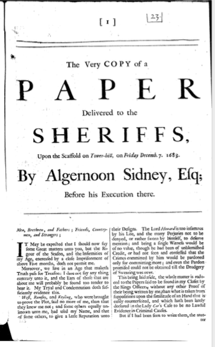

There are at least five different print versions of Algernon Sidney's Scaffold Papers: One in English, two in Dutch and two in German. In the book I am currently writing, I explain how they relate to each other. So watch this space...
The Very COPY of a
PAPER
Delivered to the
SHERIFFS,
Upon the Scaffold on Tower-hill, on Friday Decemb. 7. 1683.
By Algernoon Sidney, Esq;
Before his Execution there.

gm